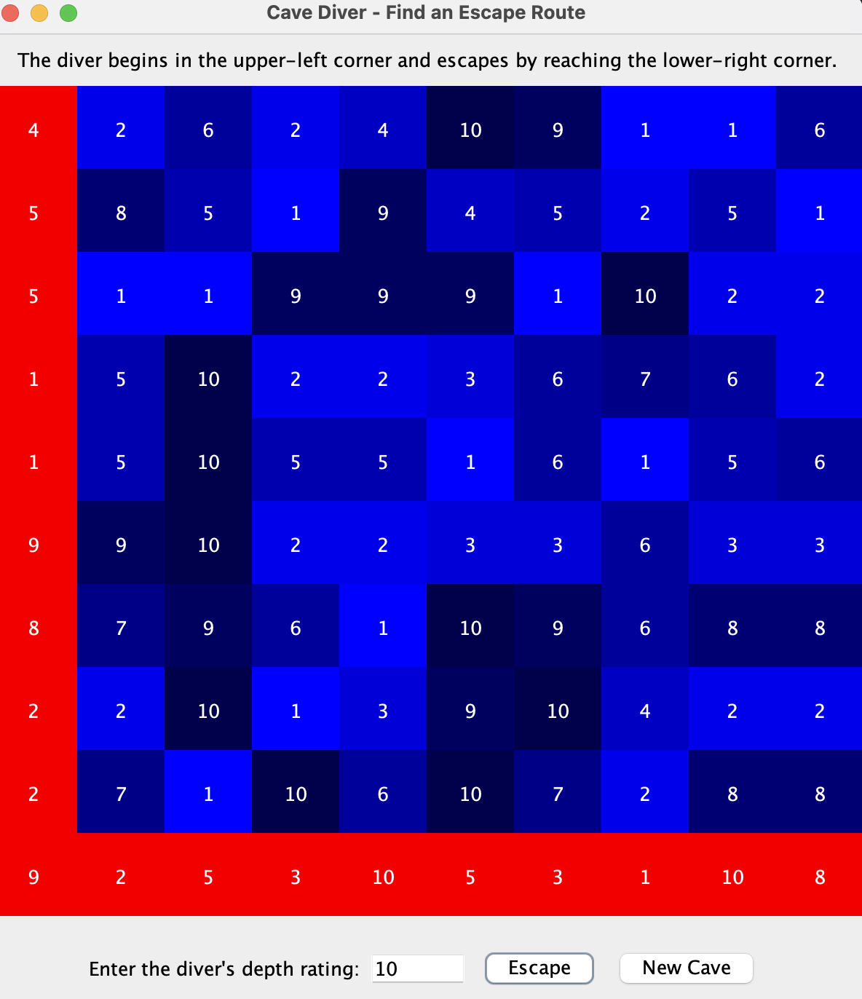

My Portfolio
About Me
Hi, I’m Sabin! I’m studying at Sinclair Community College
and working toward a career in software development.
I’m interested in building useful applications and
learning about cloud computing and AI.
My Projects
Personal Portfolio Website
A responsive website I’m building to introduce myself,
showcase my projects, and connect with others.
Technologies: HTML and CSS
Features
- A layout that adjusts to phone and desktop screens
- Navigation links that jump to each section
- Skills badges and contact links
What I’m learning
How to structure a webpage with HTML, style it with CSS,
and use Flexbox and media queries to adapt the layout
to different screen sizes.
Cave Diver Pathfinding Visualizer

A Java desktop application that generates a random 10-by-10
cave grid and searches for an escape route based on a
diver’s depth limit. A successful route is highlighted
on the screen.
Technologies:
Java, Swing, recursion, and two-dimensional arrays
Algorithm:
Recursively explores paths moving down or right,
checking depth and remaining air.
Project type: Coursework
Binary Search Tree Comparison
A C++ console application that lets users build two binary
search trees and compare their stored values, even when
their structures differ.
Technologies:
C++, binary search trees, templates, and inorder traversal
Features:
Interactive insertion, sorted output, and example
comparisons of equivalent and different trees.
Project type: Coursework
Rainfall Statistics Tracker
A C++ console application that stores monthly rainfall
records in a linked list. Users can add or edit records
and generate a summary report.
Technologies:
C++, linked lists, classes, and templates
Features:
Calculates total and average rainfall and identifies
the months with the highest and lowest rainfall.
Project type: Coursework
My Skills
Technologies I’m learning and practicing:
- HTML
- CSS
- Java
- Python
- Linux
- GitHub
- DSA